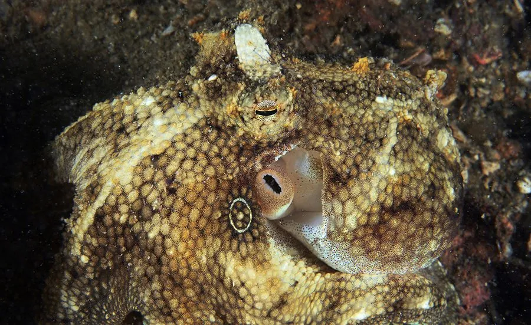

软体动物 · 动物界
短蛸 Octopus ocellatus

腕足短小的中小型章鱼，两眼上方各有一枚金圈眼斑，栖息于潮间带至浅海沙泥底，白天穴居夜里捕食。
- 分类
- 门软体动物门纲头足纲目八腕目科蛸科属蛸属
- 栖息环境
- 潮间带中下区至水深数十米的沙泥底和砾石底，白天穴居
- 地理分布
- 西北太平洋沿岸，包括中国北方沿海、日本和朝鲜半岛
- 保护级别
- 尚无保护级别；资源量受捕捞强度与近岸生境影响
物种志
短蛸的胴部呈卵圆形，胴长五至七厘米，腕足相对短小，各腕长度相近，约为胴长的两至三倍，腕上吸盘两列。它最明显的特征是头部两侧、两眼上方各有一枚圆形的金圈状眼斑，斑心深色、外圈金黄，像戴了两枚小耳环。体表皮肤粗糙，能随环境改变颜色，从灰褐到红褐、淡黄，还能鼓出小突起模拟礁石。
它分布于西北太平洋沿岸，包括中国北方沿海、日本和朝鲜半岛，栖息在潮间带中下区至水深数十米的沙泥底和砾石底，白天用腕足挖洞或钻进空贝壳、瓶罐中躲藏，夜间出来活动，捕食蟹类、贝类和小鱼。它是短寿命的种类，一年即成熟、繁殖后死亡，雌体产卵后守护卵群直至孵化。它是中国北方沿海常见的经济头足类，肉质紧实，可鲜食或制干，目前尚无保护级别，资源量受捕捞强度和近岸生境影响。
形态与习性
- 胴长五至七厘米，腕足短小
- 识别两眼上方各有一枚金圈眼斑
- 体色可随环境变为灰褐、红褐或淡黄
- 栖息水层潮间带中下区至水深数十米的沙泥底
- 习性白天钻洞或藏身空壳，夜间捕食蟹与贝类
- 寿命一年即成熟，繁殖后死亡
趣味知识
- 它眼睛上方那两枚金圈斑，像戴了一对小小的耳环。
- 它爱把空螺壳和玻璃瓶当房子，拖着自己钻进去。
- 短蛸只活一年，产完卵、守到幼体孵出，亲体就死去了。